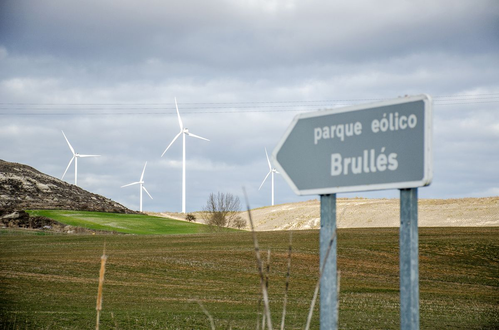

Producir sin agotar el planeta
Publicado el

Un recorrido por las prácticas sostenibles de cada sector: del riego por goteo y la saca del corcho a las fábricas con paneles solares y el transporte eléctrico.
EcoSectores
Sostenibilidad en los sectores productivos
EcoSectores es una web divulgativa sobre cómo producir bienes y servicios sin agotar los recursos del planeta. Recorremos los tres grandes sectores de la economía: el primario (agricultura, ganadería, pesca y explotación forestal), el secundario (industria, energía y construcción) y el terciario (transporte, comercio, turismo y demás servicios).
En cada sector hay prácticas que reducen las emisiones, ahorran agua y energía o aprovechan los residuos. Aquí encontrarás ejemplos reales, datos oficiales y recursos multimedia para entenderlas.

Publicado el
Un recorrido por las prácticas sostenibles de cada sector: del riego por goteo y la saca del corcho a las fábricas con paneles solares y el transporte eléctrico.
Publicado el

Una tabla con los datos oficiales de 2024: el transporte concentra un tercio de las emisiones de España, mientras que la generación eléctrica sigue bajando gracias a las renovables.
Publicado el

Fotografías, un mapa de imagen interactivo, un vídeo sobre economía circular con subtítulos, grabaciones reales de un aerogenerador y un tractor, y el mapa de la planta solar PS10 de Sevilla.
Publicado el

Talleres sobre economía circular, eficiencia energética y agricultura sostenible para empresas y estudiantes. Las plazas son limitadas.